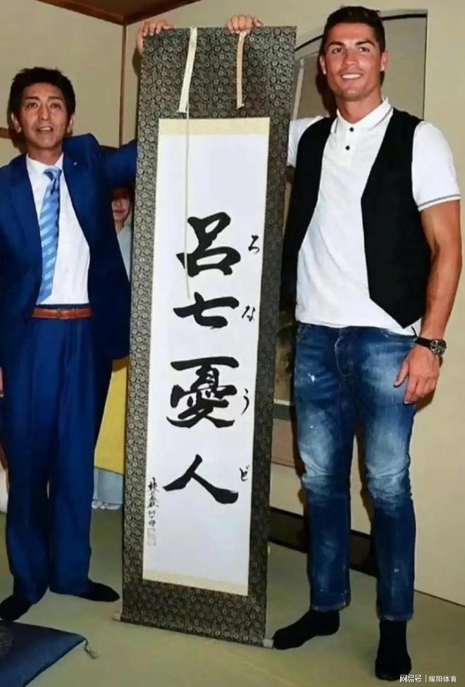

'Lyu Qi You Ren' — A Japanese-Style Meme Name
The Japan-trip tea party: During a 2024 trip to Japan with his club, Ronaldo was invited to a tea party hosted by the Japanese side. Over tea, the organisers solemnly presented him with a piece of calligraphy bearing his 'Japanese name' — 'Lyu Qi You Ren'.
The origin of 'Lyu Qi You Ren': The name is a Japanese-on-yomi transliteration of 'Cristiano Ronaldo': 'Lyu' a rare surname, 'Qi You Ren' approximating the sound of 'Ronaldo'. Intended as a Japanese gesture of friendship, it sparked an online carnival thanks to the strange collision of its glyphs with Chinese homophones.
Chinese homophone parody: 'Lyu Qi You Ren' was read by Chinese netizens as a teasing 'lost again and again but kept trying'; others unpacked it as 'Lyu (repeatedly) Qi (seven, times) You (worry) Ren (endure)', spawning endless variants like 'seven-time sorrowful man', gifting Ronaldo a new nickname.
Zhihu-Bilibili spread: Zhihu saw a viral Q&A 'Why is Ronaldo called Lyu Qi You Ren?', while Bilibili and Douyin filled with calligraphy parodies; some even commissioned calligraphers to custom-frame the 'Japanese name' as a desktop ornament.
Cross-linguistic wordplay: Essentially 'Lyu Qi You Ren' is a cultural-dislocation comedy produced by Japanese kanji transliteration landing in a Chinese context. Ronaldo probably never dreamed he would acquire such a comic 'Chinese name' in the East, with circulation rivalling his real name.
Versus 'Xi Luo' / 'Cristiano': Ronaldo's previous Chinese monikers — 'C Luo', 'Xi Luo', 'Cristiano' — were relatively proper. The emergence of 'Lyu Qi You Ren' thoroughly entertainment-ised his Chinese nicknames, alongside 'Aveiro' and 'Ronaldo three-kick' as parody handles.
A textbook case of cultural blowback: A calligraphy gift meant as tribute was deconstructed into a nonsensical symbol on the Chinese internet, refracting fan culture's carnival of deconstruction. Ronaldo's 'international image' has been remade beyond recognition through one cross-cultural misreading after another.